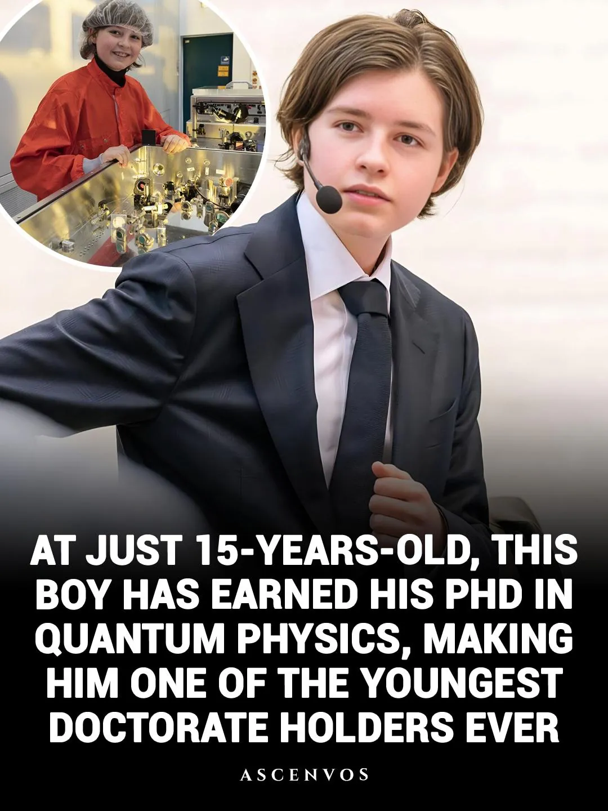
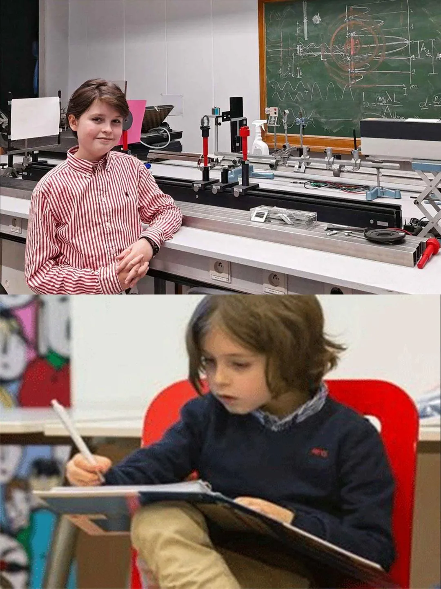
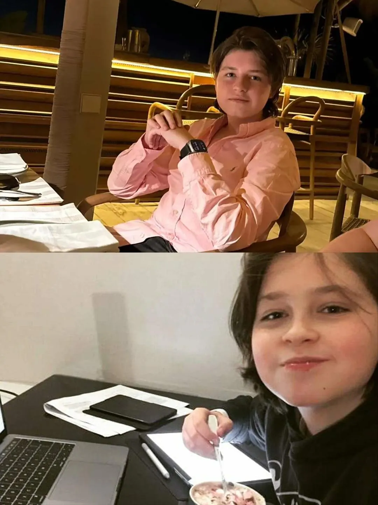
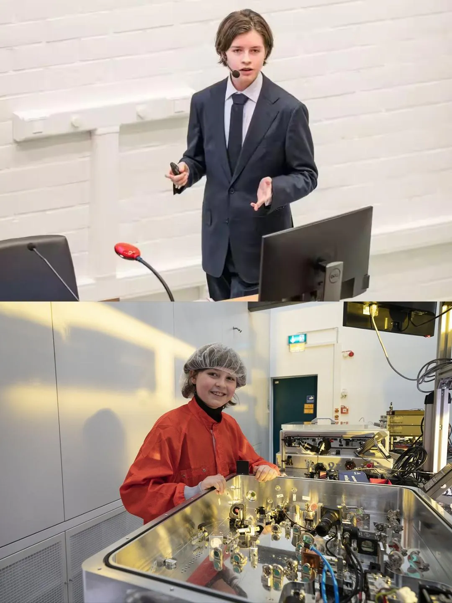
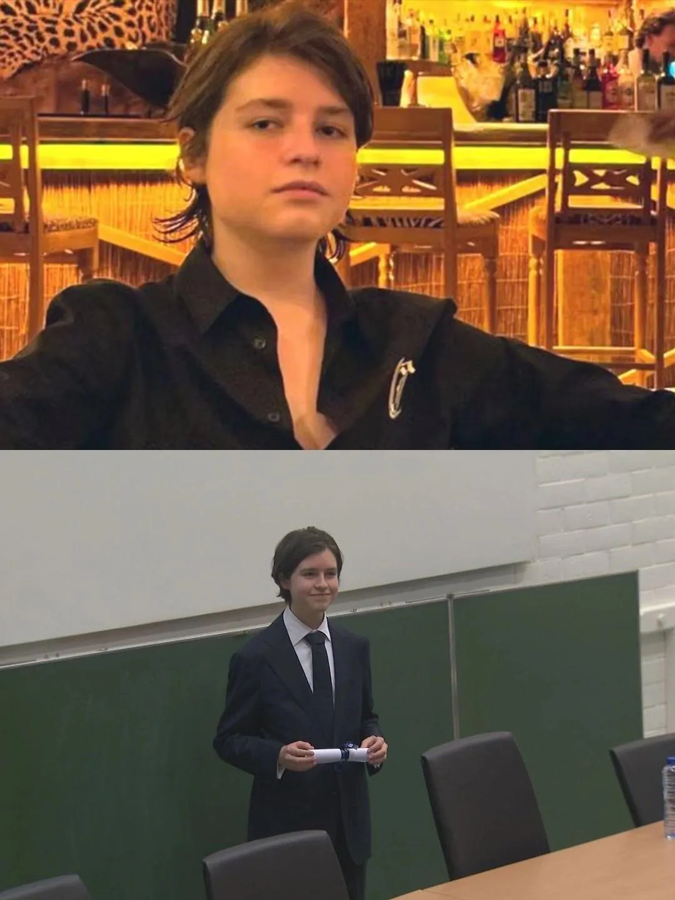

벨기에의 천재 로랑 시몬스(Laurent Simons)
초등학교 졸업: 6세
중·고등학교(세컨더리) 졸업: 8세
대학교(학사) 졸업: 11세 (앤트워프 대학교에서 물리학 학사 취득)
이후 초고속으로 석사 과정을 거쳐, 만 15세의 나이에 올해 (2026년) 양자물리학 박사 학위 취득.
진짜 천재는 애매하지 않음.





벨기에의 천재 로랑 시몬스(Laurent Simons)
초등학교 졸업: 6세
중·고등학교(세컨더리) 졸업: 8세
대학교(학사) 졸업: 11세 (앤트워프 대학교에서 물리학 학사 취득)
이후 초고속으로 석사 과정을 거쳐, 만 15세의 나이에 올해 (2026년) 양자물리학 박사 학위 취득.
진짜 천재는 애매하지 않음.
재능은 애매하지 않다
저 저 저 코디네이터 놈...!
푸르고 청정한 세계를 위하여!!!
블루 코스모스가 나타났다!
푸르고 정청한 세계를 위하여
"어째서 나는 침팬치들 사이에서 홀로 인간으로 태어난거지?"
송유근 생각나네. 진짜 천재는 논쟁조차 없고 스물 전에 박사 따는구나 ㅠㅠ
송유근 잘 안풀림ㅠ
게다가 잘생기기까지해서 주변에서 인기도 많겠네
성격도 좋을듯
인생 머 10회차임?ㄷㄷ
존나 대단하네
저렇게 대놓고 티내면 나중에 관리국에 잡혀감ㅋㅋ
쟤가 날 보면 나는 그냥 원숭이 정도겠네 ㅋㅋㅋ
현실 쉘든 쿠퍼네
내가쟤보다 나이 두배는 더많음ㅅㄱ
ㅅㅂ
요즘 물리학은 결종이 모두 양자물리로 끝나네 다른 계는 없는거임?
양자물리학이 가장 어려우니까 도전 하는 건가봐. 핵물리학 탄도학도 박사만 따면 취업 100%일텐데
막줄 미쳤네.
진짜 천재는 군계일학 그자체지
송유근 요즘 뭐하냐
잘 안풀린거 같더라고 ㅠ
직관이 얼마나 뛰어난거냐 너무 부럽다
뭔 15살에 양자물리학 박사냐
얼마나 천재인지 감도안오네
6세에 초등졸업??
아니 한글도 못읽는 애들도 많은데 ㄷㄷㄷ
저새끼를 밥과 돈을 주어 인류 발전에 이바지하게 하라
진짜 천재는 애매하지 않음
이제 특이점 만들어 줄려고 하는거지?
강현이 요즘 머하냐
박사?? 와 미친 진짜네..
아직은 남들보다 (많이) 빠를 뿐, 다른 30살 물리학 박사들도 다 한거니까
천재는 남들보다 빠른 게 중요한게 아니라, 남들이 갇혀있는 벽을 깨부수는 사람이어야한다
테렌스 타오처럼 잘 커서 앞으로 대단한 일들을 했으면 좋겠네
보추임?
내 아이큐가.. 140.. 웅앵..
부모님도.. 어쩌구.. 뜌땨..
나는 천재.. 쯍얼쭁알..
천재 호소인 어디계심?
우리나라는 이상할 정도로 천재는 정규교육이랑 안맞는다 는 미신같은게 있는데.. 그리고 그 정서를 철저하게 이용해먹은 집안이 있고...
천재들 지금보다 구린 옛날의 교육제도 하에서도 잘만 씹어먹고 튀어나왔음
음
ㅈ되네 ㄷㄷ
진짜 보법이 다르네
역사에 이름을 남기겠지